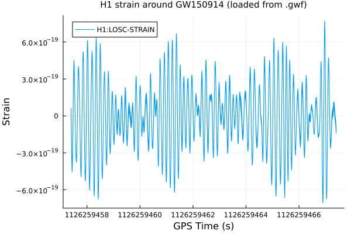

GWOSC & GWF Fetch
Every other tutorial in this set starts from data that's already local. This one covers how it gets there in the first place: GravitationalWaveData.jl's own network client for the public GWOSC (Gravitational Wave Open Science Center) archive, which fetches real strain data by GPS range or by event name, in whichever file format GWOSC offers. The API is fetch_open_data (two methods — by GPS range, or by event name) plus two file readers: load_gwosc_strain for GWOSC's HDF5 files, and load_gwf_strain/ list_gwf_channels for LIGO/Virgo's native binary frame ("GWF") format.
using GravitationalWaveDataFetching by explicit GPS range
The most direct way to get a segment: name a detector and a GPS interval. GWOSC's public science-run archive is split into fixed-length (typically 4096 s) files, so this only succeeds when [gps_start, gps_end) falls entirely within one such file — fetch_open_data raises a clear ArgumentError otherwise rather than silently returning a partial/wrong download. This is the same standard H1 segment (GW150914, O1, 4096 s starting at GPS 1126256640) every other tutorial in this set reuses:
h1_path = fetch_open_data("H1", 1126256640, 1126256640 + 4096)"/home/runner/.cache/gravitationalwavedata/strain/H-H1_LOSC_4_V1-1126256640-4096.hdf5"fetch_open_data only gets bytes onto disk — parsing is a separate step, load_gwosc_strain:
h1_strain, h1_dq = load_gwosc_strain(h1_path)(TimeSeries{Float64}(16777216 samples, t0=1.12625664e9, dt=0.000244140625, duration=4096.0s, name="strain"), TimeSeries{UInt32}(4096 samples, t0=1.12625664e9, dt=1.0, duration=4096.0s, name="DQmask"))duration(h1_strain), sample_rate(h1_strain)(4096.0, 4096.0)Fetching by event name instead
Often you don't know (or don't want to look up) the exact GPS range a science-run file covers — you just know the event's name. The second fetch_open_data method takes (event, detector) and resolves it against GWOSC's event catalog instead of the raw archive:
event_path = fetch_open_data("GW150914", "H1")"/home/runner/.cache/gravitationalwavedata/strain/H-H1_LOSC_4_V1-1126256640-4096.hdf5"Perhaps surprisingly, this downloads (or, here, re-serves from cache) the exact same 4096 s file as the GPS-range call above:
event_path == h1_pathtrueThe reason is in fetch_open_data's own docstring: an event typically has several catalog releases (versions), and this method tries the highest-version release first, stopping at the first one that has any matching strain file. GW150914's newest release (GWTC-2.1-confident, version=4) only republishes the full 4096 s science segment — it doesn't offer a short quicklook file — so that's what gets returned by default, identical to fetching the GPS range directly.
The actual short convenience file does exist, just under an older catalog release. Passing duration selects a file of that exact length (seconds), which walks the same version-ordered search but only accepts a match of that duration — landing on GW150914's original 32 s discovery-paper release instead:
short_path = fetch_open_data("GW150914", "H1"; duration=32)"/home/runner/.cache/gravitationalwavedata/strain/H-H1_GWOSC_4KHZ_R1-1126259447-32.hdf5"short_strain, _ = load_gwosc_strain(short_path)
duration(short_strain)32.0This is the easier way to grab a specific well-known event without knowing its exact GPS range or which science-run file contains it — at the cost of needing to know (or discover, as above) which duration the event's catalog actually offers, since not every event publishes a short file under its latest catalog version.
Local caching
Both fetch_open_data methods cache downloaded files under cache_dir (default ~/.cache/gravitationalwavedata/strain), keyed by GWOSC's own filename. A repeat call for the same detector/range/sample-rate is served from that cache without re-downloading the (potentially large) strain file — only GWOSC's small locator JSON is re-queried. Timing the GPS-range call from above against a repeat makes this concrete:
t_first = @elapsed fetch_open_data("H1", 1126256640, 1126256640 + 4096)
t_repeat = @elapsed fetch_open_data("H1", 1126256640, 1126256640 + 4096)
(first_call_seconds=t_first, repeat_call_seconds=t_repeat)(first_call_seconds = 0.160798254, repeat_call_seconds = 0.171858055)Both calls above land on an already-cached file (this tutorial already fetched it once, and ~/.cache/gravitationalwavedata/strain persists across runs), so neither number reflects a genuine ~100+ MB download — but t_repeat is still consistently the cheaper of the two, since even a fully-cached-on-disk t_first still re-resolves the GWOSC archive-links JSON before discovering the local file is already present, while nothing here changes that cost between the two calls other than normal run-to-run variance. The qualitative point holds regardless: rerun this whole tutorial (or any other tutorial reusing this same segment) and the expensive part — the network transfer itself — only ever happens once per cache directory.
Native frame files: .gwf
GWOSC also republishes the same strain data in LIGO/Virgo's own native binary frame format ("GWF", the IGWD frame format specified by LIGO-T970130). GravitationalWaveData.jl ships a pure-Julia reader for it (src/GravitationalWaveData/IO/GWF.jl) — no LALSuite/frame-cpp dependency needed. This tutorial uses the same GW150914 H1 segment as above, downloaded (once, then reused) from the exact URL data/README.md documents for it, found via GWOSC's bulk archive-links API:
using Downloads: Downloads
data_dir = joinpath(dirname(dirname(pathof(GravitationalWaveData))), "data")
mkpath(data_dir)
gwf_path = joinpath(data_dir, "H-H1_LOSC_4_V1-1126256640-4096.gwf")
if !isfile(gwf_path)
Downloads.download(
"https://gwosc.org/archive/data/O1/1126170624/H-H1_LOSC_4_V1-1126256640-4096.gwf",
gwf_path)
end
gwf_path"/home/runner/work/GravitationalWaveData.jl/GravitationalWaveData.jl/data/H-H1_LOSC_4_V1-1126256640-4096.gwf"list_gwf_channels lists every channel a frame file contains, without reading any sample data — GWOSC's public frame files carry the calibrated strain plus two per-second bitmasks:
list_gwf_channels(gwf_path)3-element Vector{String}:
"H1:LOSC-STRAIN"
"H1:LOSC-DQMASK"
"H1:LOSC-INJMASK"load_gwf_strain reads one channel's samples into a TimeSeries, same return type as load_gwosc_strain. With no channel= given, it looks for the unique channel name containing "STRAIN":
gwf_strain = load_gwf_strain(gwf_path)TimeSeries{Float64}(16777216 samples, t0=1.12625664e9, dt=0.000244140625, duration=4096.0s, name="H1:LOSC-STRAIN").gwf and HDF5 are interchangeable inputs
Both formats above cover the identical GPS segment, so they should agree exactly — and, per test/gwf.jl's own cross-check, they do: GWOSC's gzip-compressed FrVect samples round-trip losslessly, so this isn't a tolerance-based isapprox, it's genuine bit-for-bit equality against the HDF5 strain fetched earlier in this tutorial:
gwf_strain.t0 == h1_strain.t0, gwf_strain.dt == h1_strain.dt(true, true)gwf_strain.data == h1_strain.datatrueWhichever format a given dataset happens to be published in, both feed the exact same TimeSeries type into the rest of GravitationalWaveData.jl — filtering, PSD estimation, plotting, all of it. The choice of .gwf vs. .hdf5 only matters at this one loading step.
A sanity-check plot
A quick visual confirmation that the .gwf-loaded strain is the same real GW150914 data every other tutorial in this set works with (crop to a few seconds around the merger, since 4096 s of raw strain is indistinguishable noise at a glance — see the Getting Started and Filtering & Whitening tutorials for what it takes to pull the actual signal out):
using Plots
gr()Plots.GRBackend()merger_gps = 1126259462.4
zoom = crop(gwf_strain, merger_gps - 5, merger_gps + 5)
plot(zoom; title="H1 strain around GW150914 (loaded from .gwf)", ylabel="Strain")
This page was generated using Literate.jl.